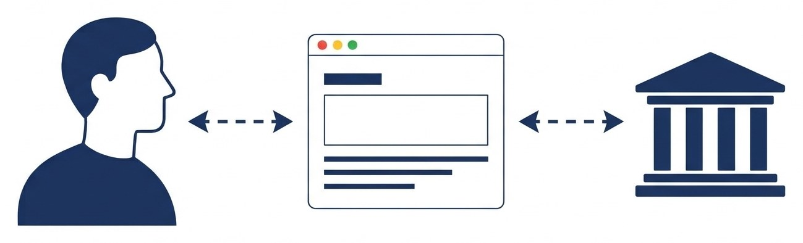

나비와 나비웹 백서 Whitepaper
나비와 나비웹을 간략히 설명합니다. 구체적인 사용 방법은 왼쪽 메뉴 아래의 사용법(단계별 연습)을 보세요.

재래식 웹: 사람이 모든 사이트를 다녀야 합니다
기존의 웹(이하 재래식 웹)에서는 모양도 쓰는 법도 제각각인 웹사이트를 사람들이 직접 찾아갑니다. 방문자는 사이트마다 각양각색의 인증 절차를 거친 뒤, 스스로 메뉴를 열고, 이런 저런 매뉴얼과 문서를 읽고 이해한 뒤, 목적에 맞는 양식을 작성해야 합니다. 길을 잃고 헤매는 것이 다반사입니다.
- 등본이나 토지대장 발급 — '정부24'에 접속해 회원 가입이나 본인 인증(공동인증서 등)을 거친 다음, 수많은 메뉴 가운데 필요한 항목을 찾아야 합니다.
- 법원 전자소송 — 한층 복잡합니다. 수백 종에 이르는 문서의 위치와 절차·단계를 알지 못하면 간단한 보정서 하나를 내기도 어렵습니다.
- 은행, 병원, 쇼핑몰, 항공사, 도청, 시청 ... — 저마다 로그인 절차와 화면 구성이 다릅니다.
그 많은 사이트를 모두 익혀 둘 수 있는 사람은 없습니다. 그래서 처음 가는 사이트에서 골머리를 앓는 일이 흔합니다.
첫 번째 변화: 나 대신 나비가 각종 사이트를 방문합니다(2026년 11월 현재)

나비웹 사용자에게는 AI인 나만의 AI 비서(나비)가 한 사람에 하나씩 있습니다. 나비는 사용자를 대신해 사이트를 방문하고, 메뉴를 찾고, 문서를 읽고, 절차를 파악해 양식을 작성합니다. PC에서는 나비웹 도우미가 나비의 손이 되어 사이트를 조작합니다.
예를 들어 대법원 전자소송에 민사소송을 접수할 때, 각종 양식은 나비가 작성합니다. 사용자의 몫은 다음과 같습니다.
- 공동인증서 등으로 로그인하기
- 각종 동의 단추 누르기
- 비용을 내야 하면 직접 결제하기
- 작성된 내용을 확인하고 최종 제출하기
메인 페이지 입력 칸이나, 오른쪽 하단 대화창 아이콘을 열고,
"빌려준 돈을 돌려받는 민사소송을 전자소송으로 접수해 줘."
"법원에서 보정명령이 왔어. 보정서를 준비해 줘."
"우리 집 주민등록등본을 발급받아 줘."
나비는 진행 상황을 자세히 알려 주고, 사용자의 뜻이 분명하지 않은 부분은 짐작하지 않고 되묻습니다. 그만큼 양식과 서류를 잘못 쓸 위험이 줄어듭니다. 법을 전혀 모르는 사람도 전자소송에 익숙한 사람처럼 자기 소송의 절차를 밟아 나갈 수 있습니다. 다만 제출 전에는 내용을 꼭 확인해야 하며, 법적 판단이 어렵거나 걸린 이익이 크면, 반드시 인간 변호사의 검토를 받으세요.
여기에는 한계도 있습니다. 전자소송뿐 아니라 지금의 웹사이트는 모두 사람이 방문한다고 가정하고 만들어졌습니다. 그래서 나비도 사람처럼 사이트를 둘러보고, 단추를 누르고, 화면의 글을 읽어야 합니다. 로그인과 동의, 최종 제출도 여전히 사람이 직접 해야 합니다. AI의 접속을 막는 일부 사이트에는 이 방법을 쓸 수 없습니다.
아래는 2026년 11월 현재, 필드 테스트 중인 두 번째 변화이자, 나비웹의 목적입니다.
두 번째 변화: 나비와 나비가 직접 소통합니다

나비웹의 웹사이트는 처음부터 사람과 나비, 두 방문자를 맞도록 설계합니다. 사람이 오면 읽기 편한 화면을 보여 주고, 나비가 오면 AI와 AI의 소통으로 바꿉니다. 나비는 메뉴를 찾거나 단추를 누를 필요 없이, 상대 나비에게 용건을 바로 전하고 필요한 정보와 서류를 주고받습니다.
예를 들어 홍길동이 법원에 볼일이 있고 법원도 나비를 두고 있다면, 이렇게 진행됩니다.
- 홍길동이 자기 나비에게 하고 싶은 일을 말합니다.
- 홍길동의 나비와 법원의 나비가 소통하며 필요한 내용을 확인하고 일을 처리합니다. 홍길동만 답할 수 있는 것은 홍길동에게 묻습니다.
- 홍길동의 나비는 홍길동에게, 법원의 나비는 법원에 각각 결과를 보고합니다.
- 홍길동은 보고서를 확인하고 최종 승인합니다. 법원에서 결정할 일은 법원의 담당자가 결정합니다.
"이 사건이 지금 어디까지 진행됐는지, 내가 더 내야 할 서류가 있는지 법원에 확인해 줘."
이 구조에서는 사이트마다 따로 로그인하거나 동의 문구를 하나씩 누를 필요가 없습니다. 본인 확인과 권한 확인은 나비들 사이에서 이루어지고, 사람이 할 일은 보고서를 확인해 최종 승인하는 것입니다.
한눈에 비교하기
| 재래식 웹 | 나비가 사람 대신 방문(2026년 11월) | 나비와 나비의 소통(2027년 ~) | |
|---|---|---|---|
| 사이트를 다루는 쪽 | 사람 | 나비 (사람처럼 조작) | 화면 조작 없이 나비끼리 소통 |
| 사람의 역할 | 절차를 익혀 모두 직접 처리 | 로그인·동의·결제·최종 제출, 나비의 질문에 답하기 | 용건 말하기, 질문에 답하기, 보고서 최종 승인 |
먼저, 나비는 무엇인가요?
나비는 "나만의 AI 비서"를 줄인 이름입니다. 회사 사장님 곁에는 일정을 챙기고 서류를 만들어 주는 비서가 있지요. 나비는 그런 비서를 누구나 한 명씩 둘 수 있게 한 것입니다.
- AI는 사람의 말을 알아듣고 글로 대답해 주는 컴퓨터 도우미입니다. 사람처럼 생각하는 것은 아니고, 아주 많은 글을 읽어서 말을 잘 이해하고 잘 씁니다.
- 나만의라는 말이 중요합니다. 나비는 오직 나 한 사람의 이익을 위해 일합니다. 광고를 보여 주거나 남의 편을 들지 않습니다.
- 질문에 대답하는 데서 끝나지 않습니다. 서류를 만들고, 메일을 쓰고, 일의 기한을 챙기는 것처럼 실제 일을 거들도록 만들었습니다.
그럼 나비웹은 무엇인가요?
나비웹은 수많은 나비가 모이는 메신저입니다. 카카오톡처럼 대화 화면에서 쓰는데, 대화 상대가 사람만이 아닙니다.
| 누구와 누구가 | 예를 들면 |
|---|---|
| 사람과 사람 | 변호사와 의뢰인이 한 건의 일을 두고 연락합니다. |
| 사람과 AI | 내가 내 나비에게 "서류 만들어 줘" 하고 말합니다. |
| AI와 AI | 내 나비가 구청의 나비와 필요한 서류를 주고받으며 준비합니다. |
누구를 만나든 화면은 똑같습니다. 달라지는 것은 그 자리에 있는 AI 비서뿐입니다. 병원 사이트에서는 병원 일을 아는 나비가, 구청 사이트에서는 구청 일을 아는 나비가 나옵니다. 그래서 한 번 배우면 어디서나 같은 방식으로 쓸 수 있습니다.
일은 이런 순서로 처리됩니다
- 내가 내 나비에게 용건을 말합니다. 예: "이사해서 전입신고 서류를 준비하고 싶어요."
- 나비가 필요한 서류를 준비합니다. 모자란 정보는 나에게 되묻고, 필요하면 상대 기관·전문가의 나비와도 소통합니다.
- 나는 결과를 보고 확인하거나 고치게 합니다. 보내기·제출 같은 중요한 단계는 반드시 내가 "좋아요"라고 한 뒤에 진행됩니다.
나비웹 도우미는 무엇을 하나요?
서류를 쓰다 보면 나비웹 밖의 사이트에서 직접 처리해야 하는 절차가 나옵니다. 나비웹 도우미는 그런 후속 절차를 내 서류 작성 화면에서 이어 맡기고, 진행되는 모습을 나비웹 화면에서 볼 수 있게 한 기능입니다.
- 특정 절차만이 아니라 어느 사이트의 일이든 맡길 수 있습니다.
- 사이트에서 하는 작업은 내가 승인해야 진행됩니다. 나비웹의 원칙인 "AI가 일하고 사람이 확인한다"가 그대로 적용됩니다.
- 항목별 진행 결과가 나비웹 화면에 표시되고, 필요한 첨부서류는 나비웹과 주고받을 수 있습니다.
- 내 브라우저에 확장 프로그램을 설치해서 쓰거나, 설치 없이 원격 브라우저로 쓸 수 있습니다.
나비웹에는 누가 있나요?
- 시민(나) — 사람마다 나만의 나비가 있습니다. 원하면 나비와 대화하며 내 프로필 페이지를 만들어 이름과 상품·서비스를 알릴 수도 있습니다. 무엇을 공개할지는 내가 정합니다.
- 기관과 기업 — 부서마다 나비가 하나씩 맡습니다. 구청 건축과의 나비, 병원 접수의 나비처럼요. 제주 지역의 읍면동·행정시·도청 같은 행정 기관도 이 방식으로 서류를 준비할 수 있습니다.
- 전문 직종 — 법률·의료·세무·회계·감정평가·특허·학교 등 업종마다 그 분야를 대표하는 AI가 있습니다. 예를 들어 변호사 사무실이 수백 곳이어도 나비웹의 법률 AI는 하나이고, 이 AI가 법적 문제를 검토하고 상담합니다. 그러나 최종 결정은 언제나 사람 전문가의 몫입니다.
무엇을 말하면 되나요?
나비가 해 주는 일은 크게 여섯 가지입니다. 말하듯이 시키면 나비가 알맞은 곳으로 이어 줍니다.
| 종류 | 무엇을 하나요 | 이렇게 말해 보세요 |
|---|---|---|
| K-서비스 | 금융·시장·물류처럼 사회를 이루는 기본 서비스를 대신 이용 | "구두가 필요한데 알맞은 걸 골라서 주문해 줘." |
| 전문가 페르소나 | 의사·변호사 같은 전문 분야의 판단을 돕는 참고 의견 | "이런 다툼이 있었는데 쟁점을 정리해 줘." |
| 공공(정부) | 민원 서류 작성, 법률 검토 같은 행정 기능 | "주택 건설 인허가 절차를 알려 줘." |
| 내 일 챙기기 | 메일 보내기, 서류 작성(자주 쓰는 양식을 내 서류함에 보관하고 새 양식도 직접 만들기), 진행 중인 일(업무: 맡은 일·맡긴 일·나 홀로) 관리, 기한과 새 메일 알림 | "다음 달 세미나에 초대하는 메일을 보내고 싶어요." |
| 나비 길잡이 | 하고 싶은 과제를 말하면 대화 세 번 안에 계획서 초안을 만들고, 진행 상황과 마감을 챙깁니다. 진행 중인 과제와 완료한 과제를 따로 볼 수 있습니다. | "올해 안에 가게 홈페이지를 열고 싶어요." |
| 내 프로필 | 나비와 대화하며 내 소개 페이지를 만들고, 상품·서비스(가격·재고·예약)와 주문·배송·방문 안내를 한 페이지로 정리 | "우리 가게 소개 페이지를 만들어 줘." |
이 설명서가 가장 자세히 다루는 것은 "내 일 챙기기"입니다. K-서비스·전문가 페르소나·공공(정부)은 2장에서 소개합니다.
내 정보는 어디에 저장되나요?
많은 분이 가장 궁금해하시는 부분입니다. 나비웹의 원칙은 "내 정보는 내 금고에만"입니다.
- 금고는 보통 내 컴퓨터와 내 폰입니다. 전문 용어로는 PDV(개인 데이터 금고)라고 부릅니다. 원하면 내가 정한 클라우드를 쓸 수도 있습니다.
- 내 대화와 개인 정보를 회사 서버에 쌓아 두지 않습니다. 해외의 큰 AI 서비스들이 이용 내용을 자기 AI를 키우는 데 쓰는 것과 다릅니다.
- 중요한 기록은 해시라는 "내용의 지문"만 네트워크에 남깁니다. 내용을 몰래 고치면 지문이 달라져서 알아챌 수 있고, 내용 자체는 남에게 보이지 않습니다.
- 나비 길잡이가 만든 계획서도 내 금고(PDV)에 보관합니다.
- 프로필은 항목별로 공개 여부를 내가 정합니다. 기본은 이름만 공개이고, 상품·서비스와 판매 안내는 공개로 시작하며, 개인 정보와 찾아가는 길·지도 링크는 비공개로 유지됩니다.
- 광고가 없고, 프로그램 소스는 누구나 볼 수 있게 공개되어 있습니다.
어디까지 믿어도 되나요?
나비는 도구이고, 마지막 판단은 사람이 합니다.
- 나비는 허가·접수·진단·법률 자문을 하지 않습니다. 승인과 발급은 담당 공무원이나 기관이, 진단은 의사가, 법적 판단은 변호사가 합니다.
- 나비가 쓴 서류와 메일은 보내기 전에 꼭 읽어 보세요. AI도 실수할 수 있습니다.
- 법률 AI(K-Law)가 만든 가상 판결이 실제 대법원 판결과 일치한 비율은 73%였습니다(공개 판례 300건). 다만 이것은 개발자의 자체 실험 결과이며 제3자 검증은 진행 중입니다. 즉 "참고용"이지 "정답"이 아닙니다.
최종 수정: 2026년 11월 27일